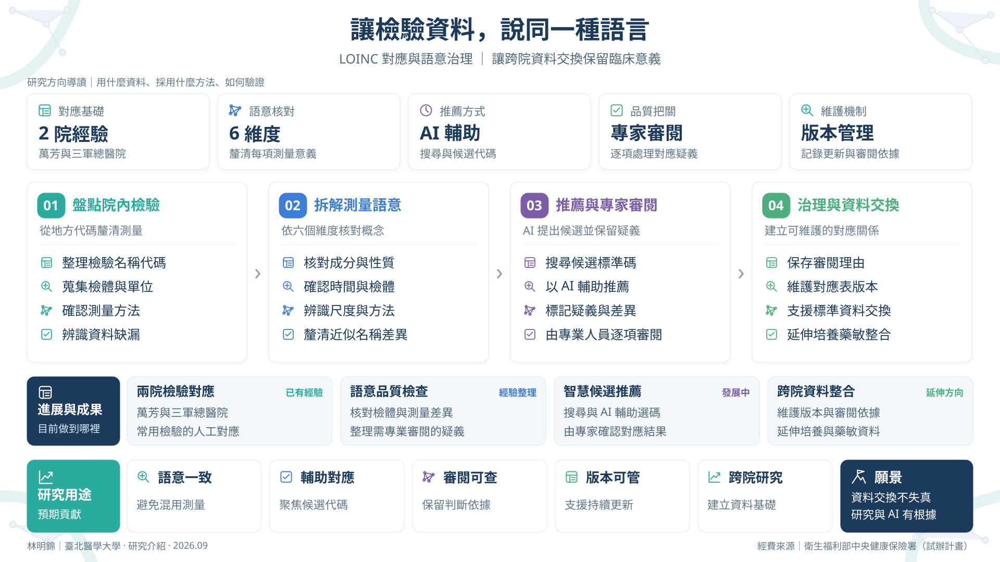

讓檢驗資料，說同一種語言
研究摘要 / Abstract
檢驗項目的名稱看起來相同，不一定測量同一件事。同樣叫血糖的檢驗，在不同醫院可能使用血漿或全血檢體，測量方法與單位也未必相同。院內代碼與命名各自為政，資料一旦跨院交換或用於研究，這些差異若未被辨認，不同的測量就會被混在一起。
我們以萬芳醫院與三軍總醫院常用檢驗的人工對應經驗為基礎，發展對應到 LOINC 國際檢驗標準碼的語意治理方式。做法是先盤點院內代碼、名稱、檢體、單位與方法，再逐一核對成分、測量性質、時間、檢體系統、尺度與方法等維度，把每個檢驗實際代表的測量釐清，而不是只比對文字。
在這個基礎上，團隊正在發展以搜尋與人工智慧提出候選標準代碼的輔助方式，搭配疑義檢查，由專業人員逐項審閱並保留審閱依據。對應表以版本管理維護，可追溯、可更新，用來支援標準化資料交換與跨院研究；後續也規劃將經驗延伸到培養與藥敏資料的整合。


內容依據：2026｜HAI 服務建議書 v7.2：LOINC 對應治理與資料介接章節；2026｜英國倫敦演講研究資料：LOINC 標準化研究